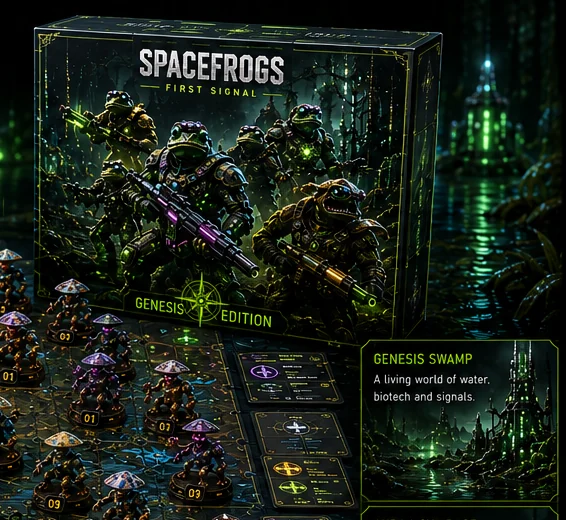
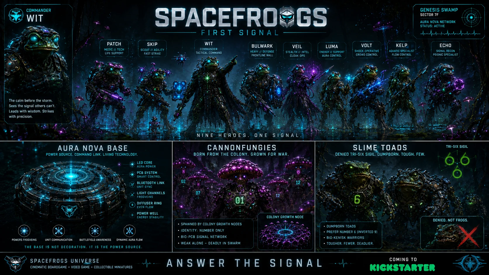
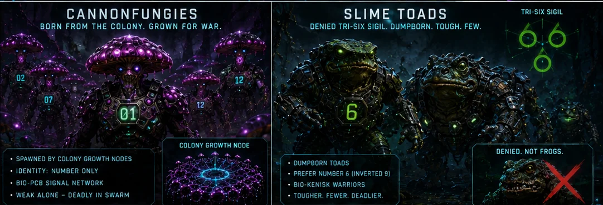
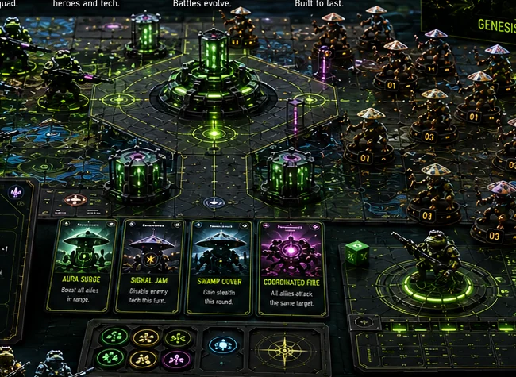
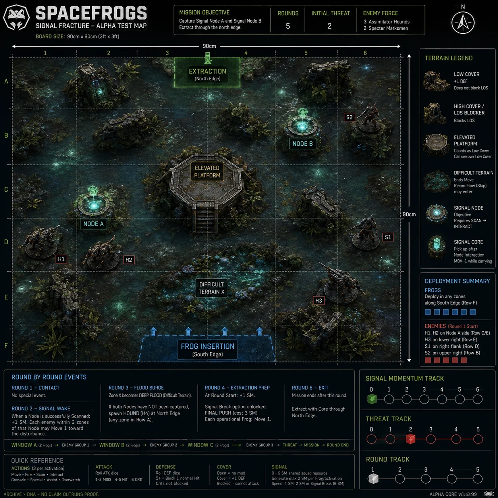
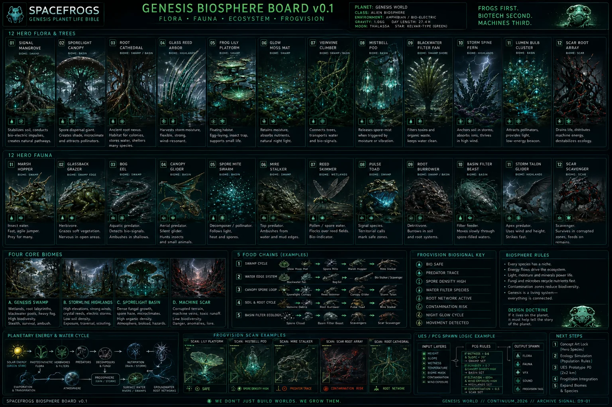

FIRST
SIGNAL
Nine specialist Spacefrogs enter a living neon swamp where biotech, smart bases and the Cannonfungie swarm collide. The Signal is active.
Genesis Box
The current Genesis Edition brings the nine heroes, Aura Nova technology, mission systems, modular terrain and enemy factions together in one premium boardgame universe.

Nine heroes. One elite squad.
WIT, PATCH, SKIP, BULWARK, VEIL, LUMA, VOLT, KELP and ECHO form the current FIRST SIGNAL roster.

WIT · PATCH · SKIP
Tactical command, field repair and fast objective contact.
BULWARK · VEIL · LUMA
Defense, precision and Aura control.
VOLT · KELP · ECHO
Crowd control, flow control and signal recon.
The swamp fights back.
Cannonfungies are numbered, networked and grown for war. Slime Toads are tougher, fewer and deadlier.

Cannonfungies
Identity-less fungus marines connected through colony growth nodes.
Slime Toads
Dumpborn bio-kenisk warriors carrying the inverted six.
False Signals
Trust must be earned through proof. No claim outruns the Signal.

The base is the power source.
Aura Nova powers heroes and technology across the living battlefield. It is not decoration: it is the command link, power well and responsive center of the mission.
A living battlefield.
Capture Signal Nodes, manage threat and momentum, survive the flood surge and extract through the north edge. Every decision changes the mission.

The world is alive.
Mangroves, stormlight highlands, sporelight basins and machine scars form a connected ecology. Frogs first. Biotech second. Machines third.
